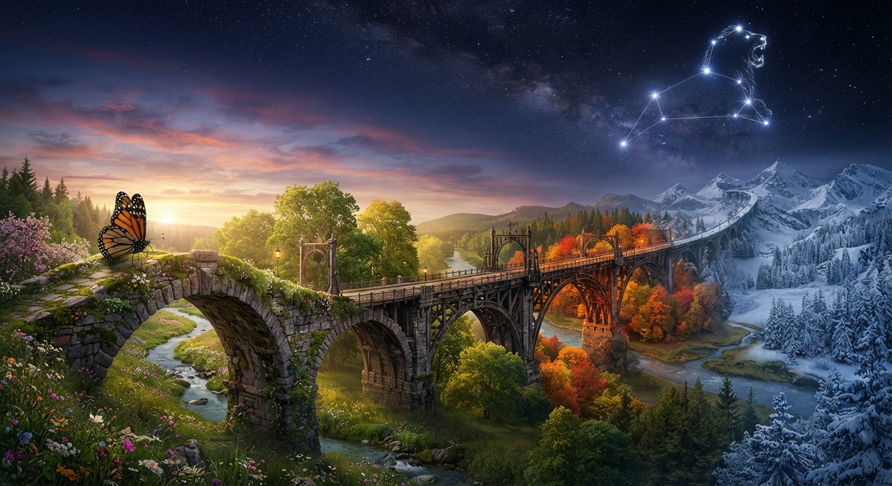

The Man on the Other Side
Some people leave our lives, yet never truly leave our hearts.
This poem is a reflection on a love remembered across seventeen years of separation. It carries the ache of distance,
the tenderness of memory, and the quiet longing to see the person time has changed.
I remember the voice, the smile, the presence, and the mysterious energy that once made everything feel enchanted. Yet
after so many years, I can only wonder who he has become and what time has written into his face.
This is not simply a poem about missing someone. It is about the strange way the heart can preserve a soul across years,
even when life has carried two people onto different paths.
Seventeen years became a bridge between memory and the present, between the person I once knew and the man I can only
imagine today.
🎵 "Romantic Emotional Piano" - PaulYudin (Pixabay Music)
